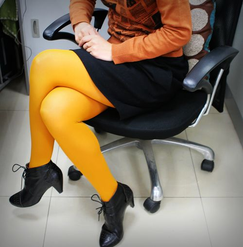

这生活。 @ Nov 26, 2009
前天发现土豆啃了其中一只拖鞋，一顿好打。
昨天发现土豆将另一只也啃了，又是一顿打。
今天它还是将拖鞋叼进窝里啃。。。
我妥协了。
LUKE很爱惜它的玩具，土豆来了之后熊和刺球被啃残。我那舒适的“顺”牌拖鞋及皮鞋被啃下的一角。成年狗如此神经质也忒少见了。以及外出扒垃圾吃巴巴，可爱的时候很可爱，可憎的时候恨不能一巴掌煽死它。它简直就是天使与魔鬼的共同体。


两只狗狗的牙菌斑轻重不一，对比图片知道Luke的牙菌斑已经到了中期症状，土豆原先生活的宠物医院给做过清洗，症状依然存在。购买了这只喷剂，每天朝牙龈内外喷若干次，尤其晚上睡觉前，一周后Luke的牙龈症状明显好了许多，原先暗红色发炎部位渐渐变成粉红色。牙齿是狗狗的武器，有谁希望自己的爱宠没到中年就掉一口牙，烂一嘴肉呢？早用早轻松~（哇噻，耳边忽然响起“早用早轻松”的旋律，随口出来的都是广告词，可见万恶的电视台播广告之多之长！）

这一周是羊肉美食周。开始买的羊排，一半炖汤一半红烧，好吃。接着花了68元买回一只羊腿，全部水煮，辣的过瘾，每次加热前放入娃娃菜两颗，粉丝若干。比饭店实惠又干净，每年冬季都是吃父母烧的羊肉，今年第一次自己烧，更合口味呢。

天气回暖到十几度，有机会穿上彩色袜子臭美。在苏黎世班赫夫大街的商场里买了十几双连裤袜回来，这是最晃眼的一双。相对国内厚木袜子款式颜色多，质量和价格也好。厚木的袜子去年有卖到1000的款，瑞士一线品牌的袜子才会过千（CNY），总说在国内货币购买力强，可是国内稍微象样的商场价格每年都涨得厉害，为什么为什么啊？

12 Responses to “这生活。”
2009-11-26
你穿这袜子，你周围的男同事能安心的工作吗。：P
2009-11-26
我才不管他们怎么想呢！
2009-11-26
茶在博客上总聊自家的狗，怎么从没见你说孩子呢？难道是丁克一族？
2009-11-26
好奇我的私生活？没孩子，让您失望了！不过有许多聊孩子的博客。。。。
2009-11-26
土豆真是太不乖了，打PP，要向luke学习学习嘛
2009-11-26
归归，要是能打听话也好啊，今天打明天忘，才叫人抓狂！
2009-11-26
这袜子够闪D，我也有一双，淘宝货，暗许多，不如这个光亮。好佩服你的勇气，向茶学习
2009-11-26
姐姐~~~我看你的博客7年了.希望你幸福…
2009-11-27
这袜子你也真敢穿出来啊…太那个抢眼了吧.
2009-11-27
为什么不敢啊？搭配的不难看，况且别人怎么想关我什么事？自己喜欢才是重要。
2009-11-27
袜子够闪，我喜欢。自己喜欢就OK，穿给自己看的~~
2009-12-08
蟹黄色？搭蓝色更抢眼吧？
Leave A Reply
存档只读，评论已关闭。